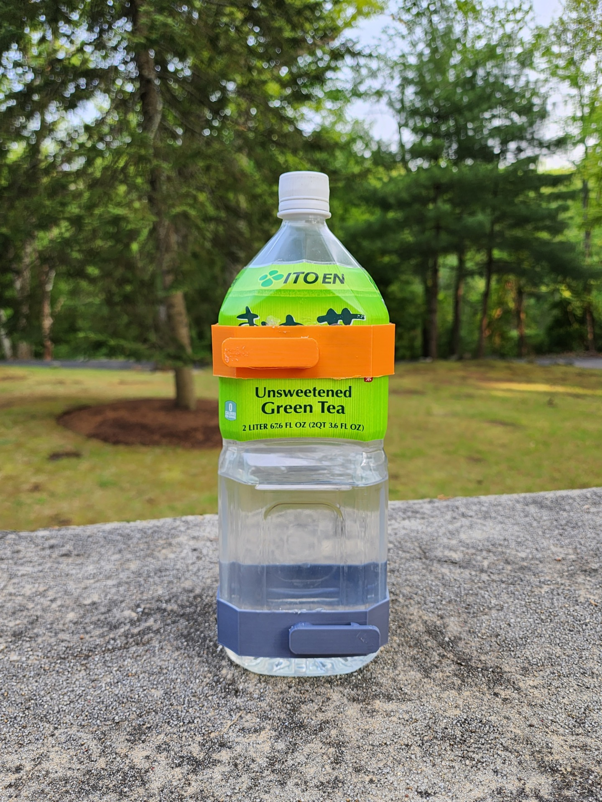

Green Tea Bottle Backpack Mount
May 2023- Custom backpack mounts for scrap bottles made in Fusion 360 and 3D Printed
Read More
Rocket Stabilization Platform

January 2023 - A test of using a 6 axis gyro sensor to control 2 flight surfaces via PID
Read More
Computer Vision Nerf Turret

June 2023 - A 2 Axis nerf turret that uses the computer vision to send positional data to an Arduino microcontroller. A servo controls the pitch and a stepper motor controls the yaw.
Read More